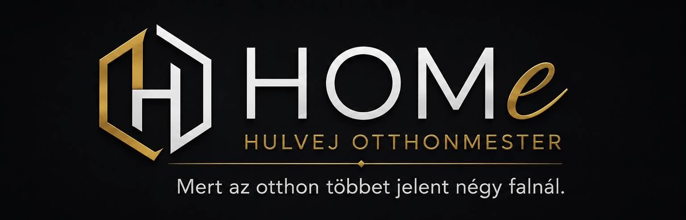

Üdvözlöm!
Hulvej Attila vagyok, a HOMe – Hulvej Otthonmester alapítója.
Közel 10 éve dolgozom az építőiparban. Pályafutásomat alkalmazottként kezdtem, ahol közel 9 éven keresztül szereztem szakmai tapasztalatot különböző felújítási és építőipari munkák során. Az elmúlt közel egy évben már egyéni vállalkozóként dolgozom, hogy ügyfeleimnek saját elképzeléseim szerint, a lehető legmagasabb színvonalon nyújthassak szolgáltatást.
Burkoló-, kőműves- és festő végzettséggel rendelkezem, emellett ácsmunkákban is többéves gyakorlati tapasztalatot szereztem.
Munkám során a precizitás, a megbízhatóság és az igényesség áll az első helyen. Hiszem, hogy egy jól elvégzett munka nemcsak szép, hanem tartós is. Minden feladatot úgy végzek el, mintha a saját otthonomon dolgoznék. Fontos számomra a tiszta munkavégzés, ezért a munka befejeztével mindig rendet hagyok magam után.
Legnagyobb öröm számomra, amikor ügyfeleim elégedetten veszik birtokba a megújult otthonukat, és jó szívvel ajánlanak tovább családjuknak, barátaiknak és ismerőseiknek.
Szolgáltatásaim közé tartozik többek között:
Elsősorban Nyíregyházán és vonzáskörzetében vállalok munkát.
Célom, hogy minden ügyfelem korrekt áron, megbízható kivitelezést és olyan végeredményt kapjon, amelyre hosszú éveken át büszke lehet.
HOMe - Hulvej Otthonmester Mert az otthon többet jelent négy falnál.